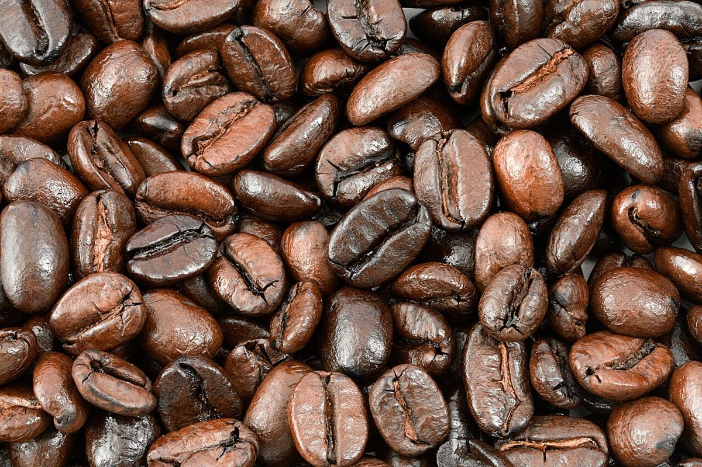
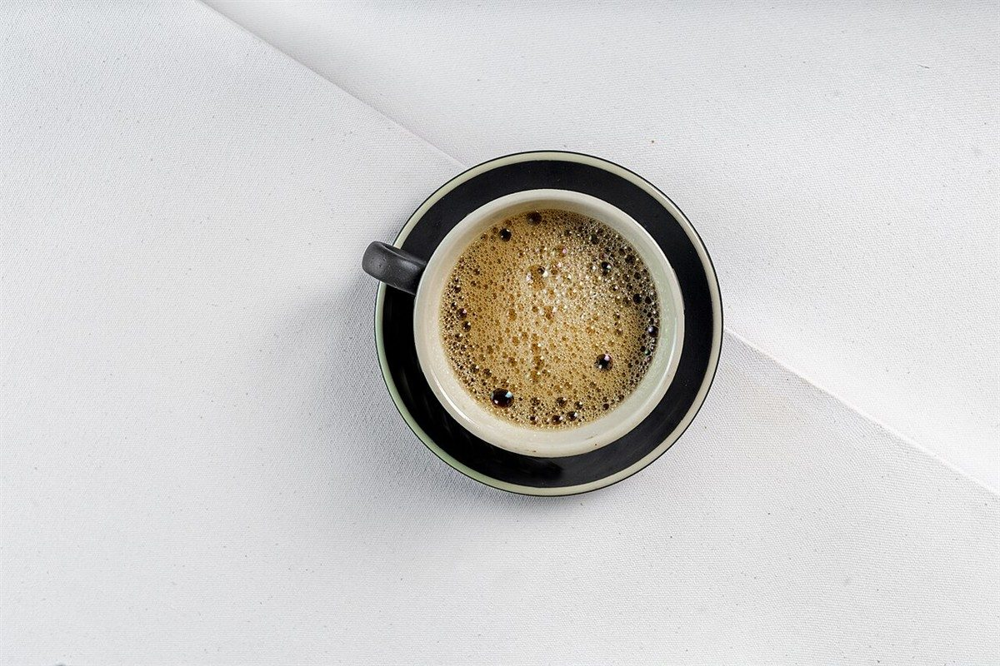

CAFE / 広島県三原市港町
CAFEもみの
木
紙の束をそっと留めるように、このページも五つの「留め場所」でできています。お店の情報は、今わかっている分だけを正直に並べました。


01五つの留め場所
制作側の連想で、お店の理念・由来とは無関係です。クリップを五種類並べ、ページごとに「何を留めるか」を決めました。
02わかっていること
| 所在地 | 〒723-0017 広島県三原市港町３丁目２−２７ |
|---|---|
| 電話 | 080-3894-5020 |
| 営業時間 | 準備中 |
| 定休日 | 準備中 |
| ご予約 | 準備中 |
| 駐車場 | 準備中 |
| SNS | Instagram @cafe_mominoki |




営業時間・メニュー・価格などは、確認でき次第ここに載せます。最新の様子は Instagram で。
Instagram @cafe_mominoki を見る